Vor Kurzem habe ich mir ein Topcase für mein Motorrad gekauft und stand vor zwei Problemen: Der Gepäckträger meines Motorrads hat kein Standard-Lochbild, und die Grundplatte des Topcases war schlecht gefertigt (sie stammte von Temu, also keine große Überraschung). Keines der beiden Teile passte zum anderen, also habe ich in FreeCAD einen 3D-gedruckten Adapter konstruiert, der zwischen beide geschraubt wird. Hier beschreibe ich den gesamten Ablauf, vom Maßnehmen bis zur Endmontage.
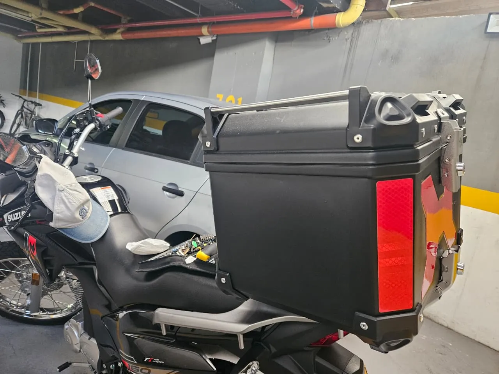
Der Gepäckträger meines Motorrads ist laut dem aufgeklebten Warnschild für maximal 7 kg ausgelegt. Topcase und Grundplatte wiegen 4 kg, mein Helm 1,2 kg, und was ich üblicherweise darin transportiere – Schlösser, Warnkleidung, Werkzeug – weitere 1,5 kg. Das ergibt 6,7 kg, sodass für den Adapter höchstens 300 g übrig blieben. Diese Zahl bestimmte jede Konstruktionsentscheidung.
Für die Konstruktion des Adapters brauchte ich die Geometrie zweier Teile: des Gepäckträgers und der Topcase-Grundplatte – genauer gesagt die Lage jedes Lochs und jedes Langlochs.
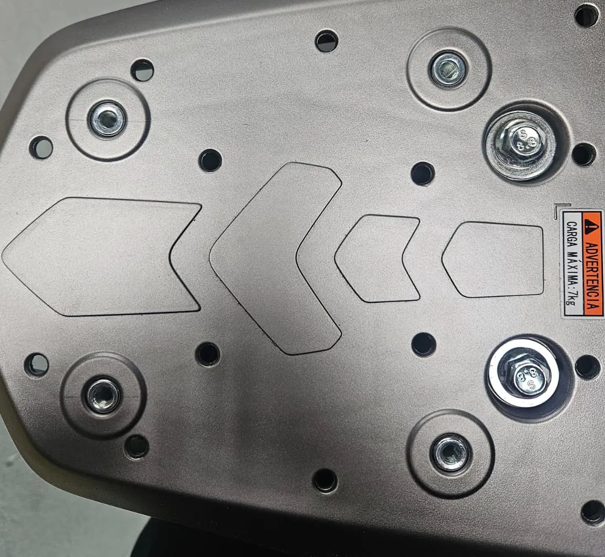
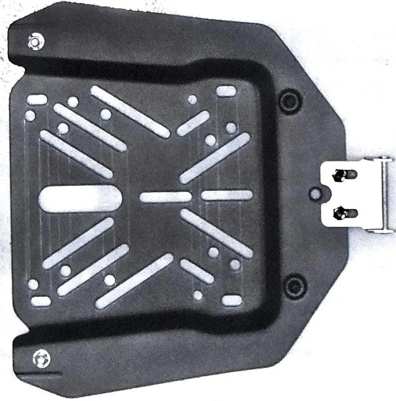
Es gibt mehrere Möglichkeiten, diese Geometrie zu erfassen:
Für den Gepäckträger habe ich die Pause gewählt: Ich habe Pergamentpapier mit Klebeband darauf fixiert, Löcher und Konturen mit Markern angezeichnet und das Blatt danach gescannt.
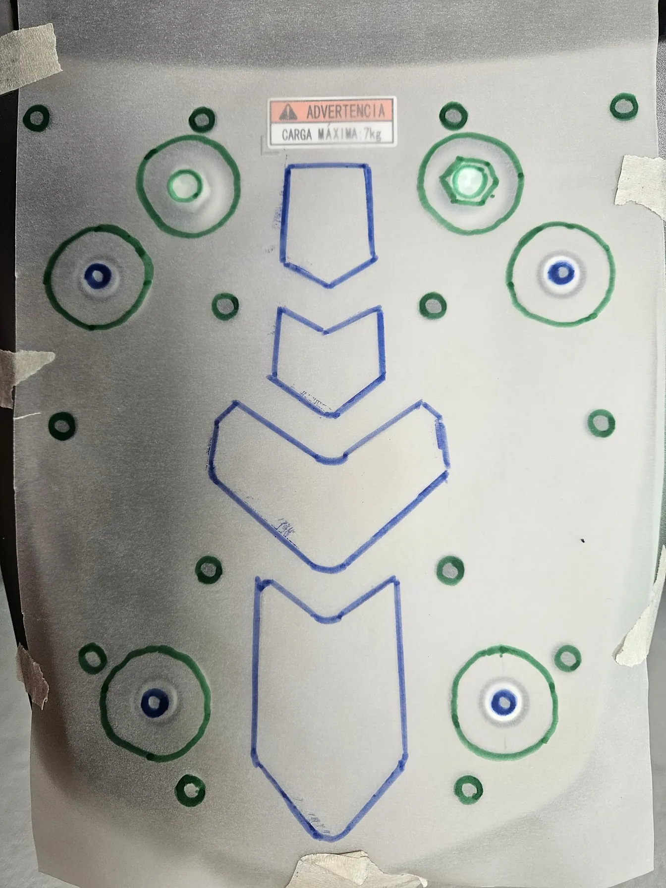
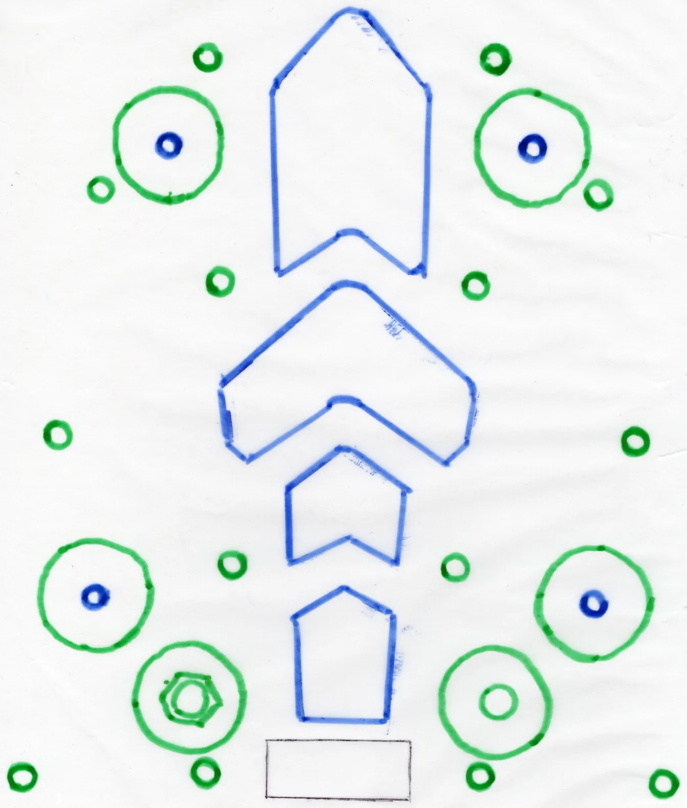
Bei der Topcase-Grundplatte bin ich direkter vorgegangen. Da sie eine ebene Seite hat, habe ich sie einfach auf das Glas des Druckerscanners gelegt. Ein Flachbettscanner kennt kein Perspektivproblem, daher ist das Bild maßstabsgetreu und unverzerrt – ganz ohne Pause.
Ich habe beide Scans in FreeCAD importiert und das Werkzeug zur Maßstabskalibrierung verwendet: Man markiert auf dem Bild eine bekannte Strecke, gibt ihre tatsächliche Länge an, und FreeCAD skaliert das Bild entsprechend. Danach liegen beide Bilder in Originalgröße vor, und man kann direkt darauf skizzieren und jedes Loch und Langloch nachzeichnen.
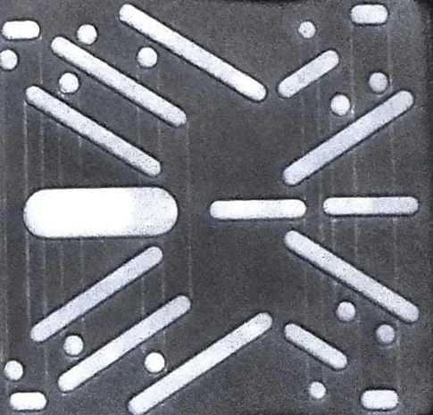
Mit je einer Skizze pro Teil habe ich eine fixiert und die andere darüber verschoben. Ziel war, mindestens eine oder zwei der vier M6-Gewindebohrungen des Gepäckträgers mit Langlöchern der Grundplatte in Deckung zu bringen, sodass eine Schraube ganz hindurchgehen kann: Topcase-Grundplatte, Adapter und Gepäckträger.
Nach ein wenig Verschieben fand ich eine Position, in der zwei der Gewindebohrungen des Motorrads mit zwei Langlöchern der Topcase-Grundplatte übereinstimmten, und dort habe ich die Skizze belassen.
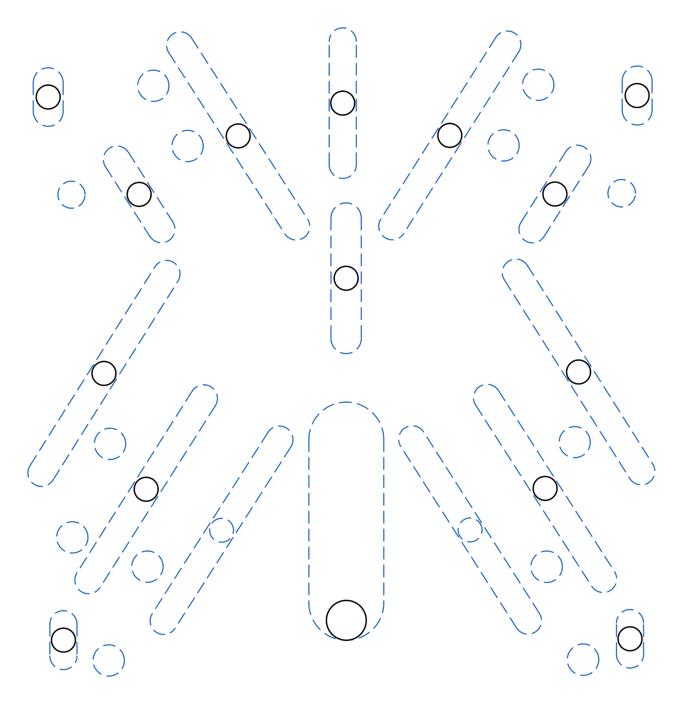
Der Adapter beginnt als extrudierte Platte, und ihre Fläche hatte drei Grenzen: die Größe des Gepäckträgers, die Größe der Topcase-Grundplatte und das Druckbett meines Druckers. Gepäckträger und Grundplatte sind beide größer als das Druckbett, also gab der Drucker die Grenze vor: Ich habe mit einem Quadrat von 19 × 19 cm begonnen – groß genug, um alles Nötige abzudecken, und trotzdem innerhalb der Druckfläche von 21 × 21 cm.
Ich habe alle Schraubenlöcher in die Platte geschnitten und sie anschließend nach ihrer Funktion in zwei Gruppen eingeteilt:
An diesem Punkt hatte ich ein druckbares Modell, habe es aber noch nicht gedruckt. Zuerst habe ich eine STL exportiert und im Slicer Druckzeit und Materialverbrauch geprüft: 255 g und fast 7 Stunden. Das lag zwar innerhalb der 300 g, aber mit sehr wenig Spielraum, also habe ich beschlossen, Material zu entfernen.
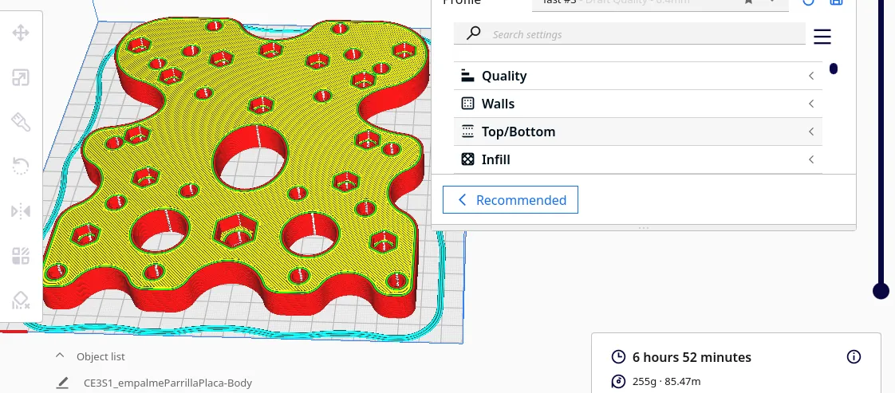
Zurück in FreeCAD habe ich eine neue Skizze aus projizierter Geometrie erstellt. Um jedes Schraubenloch habe ich einen konzentrischen Kreis gezeichnet und extrudiert, wodurch eine Basis aus einzelnen Zylindern entstand, die jedes Loch einfassen. Diese Zylinder habe ich dann mit geraden Streben verbunden und so eine Art Gitter oder Fachwerk gebildet: Das Material bleibt dort, wo die Schrauben sitzen, und der Rest der Platte verschwindet.
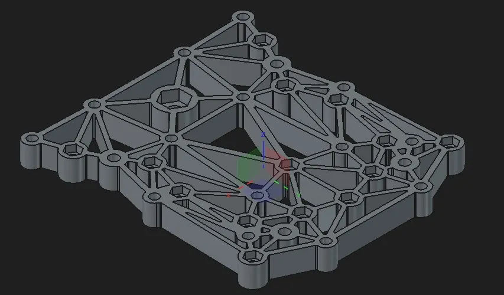
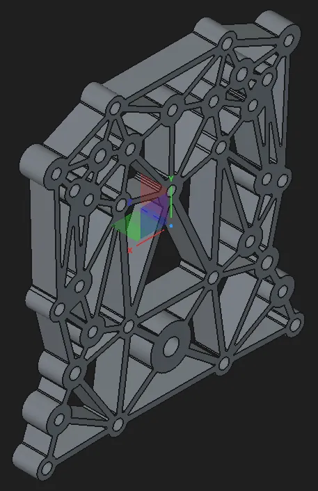
Ein Detail: Einige Schrauben liegen unterhalb der Topcase-Grundplatte, und ihre Köpfe brauchen eine Vertiefung, damit die Grundplatte plan aufliegt. Diese Vertiefung zu modellieren hätte einen Druck mit Stützstrukturen erfordert, die anschließend im Müll landen. Schneller war es, das Teil komplett flach zu drucken und die Vertiefungen danach mit einem Multifunktionswerkzeug auszuschleifen.
Der erneute Slicer-Durchlauf zeigte den Unterschied deutlich: Der Adapter sank von 255 g auf 221 g, das Filament von 85,47 m auf 74,05 m und die Druckzeit von 6 h 52 min auf 6 h 34 min.
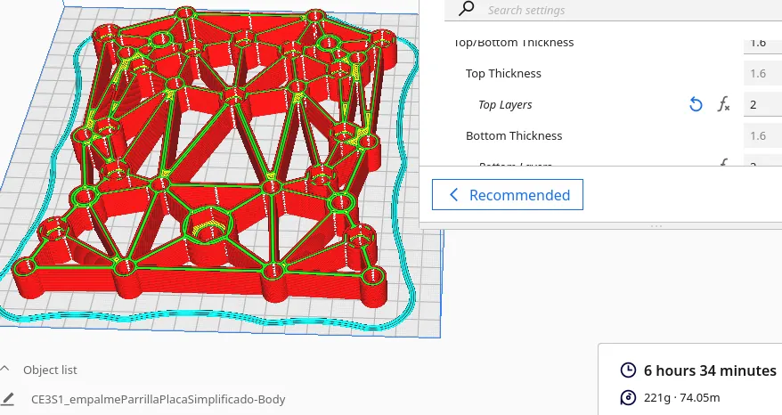
Ich habe den Adapter in PETG gedruckt, die Vertiefungen mit dem Multifunktionswerkzeug ausgeschliffen und alles montiert: zuerst den Adapter auf den Gepäckträger, dann die Topcase-Grundplatte auf den Adapter. Das fertige Teil wiegt etwa 220 g, 80 g unter dem Budget.
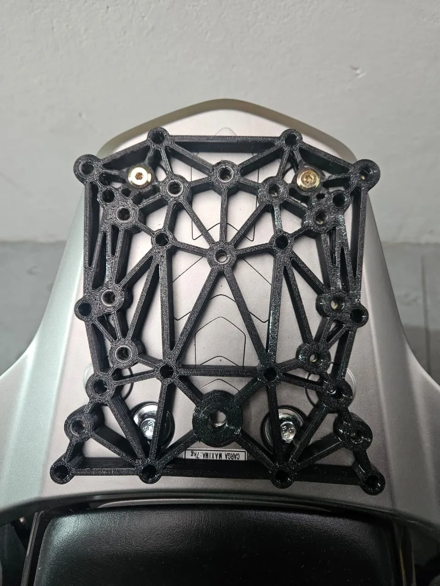
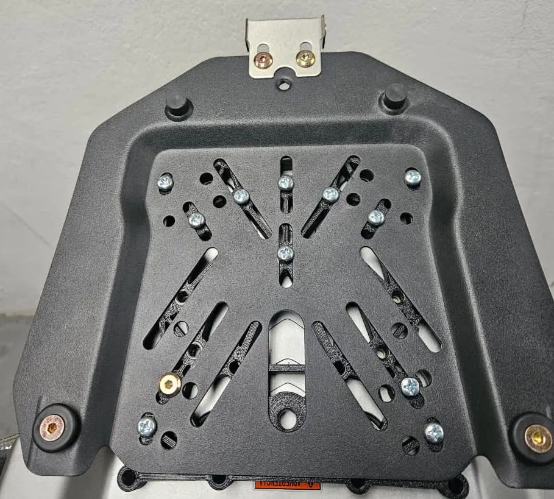
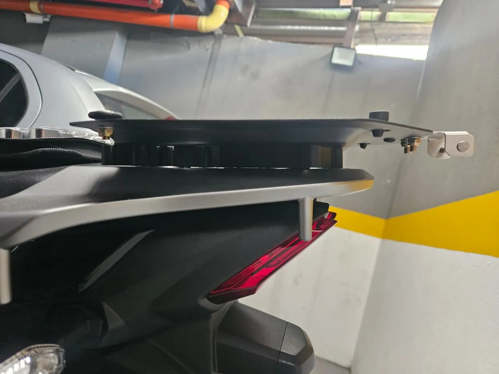
Die CAD-Dateien des Adapters liegen auf GitHub: github.com/ElJoho/motoDR160X.
Wenn ich nur eine Idee aus diesem Projekt mitnehmen dürfte, wäre es der Scanner: Bei flachen Teilen liefert er maßstabsgetreue Maße – ohne Messschieber und ohne Perspektivfehler.